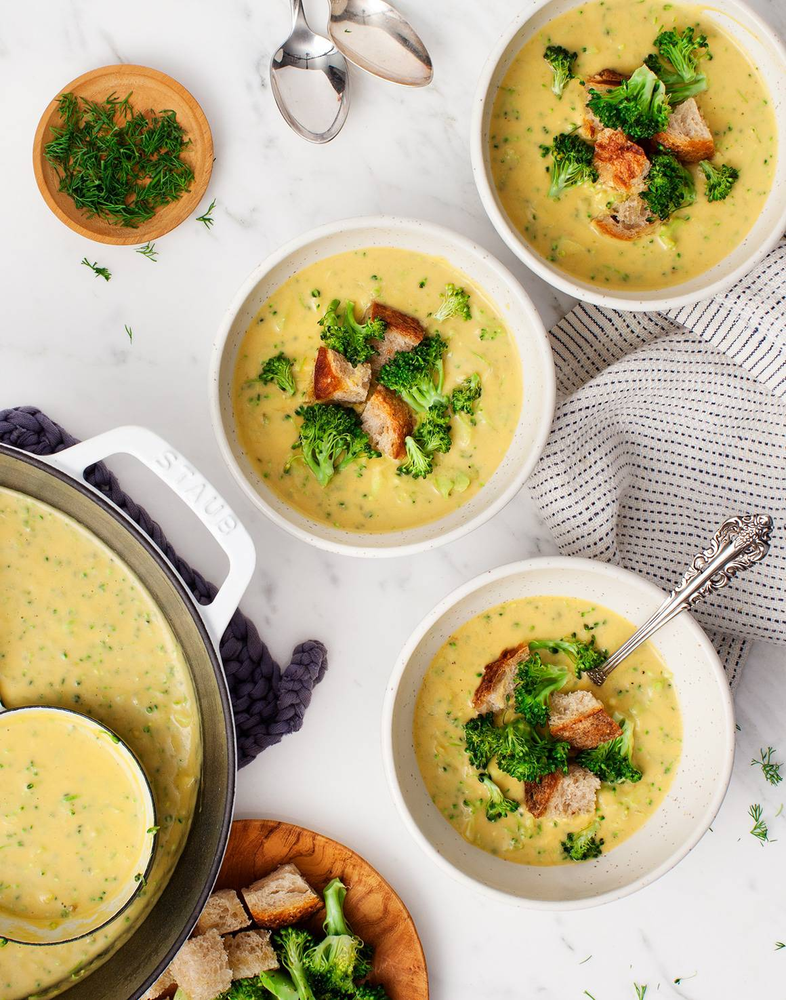

The Little Kitchen
A family food blog with easy, well tasted, family approved recipes!
Soup Ideas

- Vegan Broccoli Soup

Ingredients :
- 2 tablespoons extra-virgin olive oil, more for drizzling
- 1 small yellow onion, diced
- ½ cup chopped celery
- ⅓ cup chopped carrots
- 1 lb. broccoli, stems diced, florets chopped
- 1 small yukon gold potato, diced (1 cup)
- 4 garlic cloves, minced
- 4 cups vegetable broth
- 3 cups cubed bread, for croutons
- ½ cup raw cashews
- 1½ teaspoons apple cider vinegar
- 1/2 teaspoon Dijon mustard
- ¼ cup fresh dill
- 1 tablespoon fresh lemon juice
- 3/4 teaspoon sea salt
- freshly ground black pepper
Instructions :
- Preheat the oven to 350°F and line 2 small baking sheets with parchment paper.
- Heat the oil in a large pot or Dutch oven over medium heat. Add the onion, celery, carrots, broccoli stems, salt, and pepper and sauté until softened, about 10 minutes. Add the potatoes and garlic and stir, then add the broth and simmer for 20 minutes until the potatoes are soft. Let cool slightly.
- Set aside 1 cup of the broccoli florets to roast as a topping for the soup. Place the remaining florets in a steamer basket, and set over a pot with 1-inch of water. Bring the water to a simmer, cover, and let steam 5 minutes, until the broccoli is tender.
- Meanwhile, place the reserved broccoli florets and the bread cubes on the baking sheets. Toss with a drizzle of olive oil and a pinch of salt and roast until the bread is crispy and the broccoli is tender and browned around the edges, 10 to 15 minutes.
- Transfer the soup to the blender and add the cashews, apple cider vinegar, and mustard, and blend until creamy. Work in batches, if necessary. Add the steamed broccoli florets, dill, and lemon juice, and pulse until the broccoli is incorporated but still chunky. The soup should be thick; if it's too thick, add 1/2 cup water to thin to your desired consistency.
- Season to taste and serve the soup in bowls with the roasted broccoli and croutons on top.
- Butternut Squash Soup
- Black Bean Soup